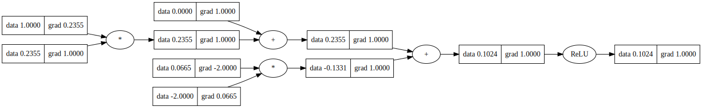

Autograd#
An autograd engine is a tool that automatically compute gradients (i.e., the vector of partial derivatives of the function with respect to its inputs) of a target function. This is important because gradient computations are at the core of optimization algorithms, which are used to adjust the parameters of a machine learning model to minimize the difference between the predicted and actual values.
An autograd engine can work with scalar-valued functions like micrograd and with more complex data structures. Conceptually it can be visualized like a computational graph, like the one below:
In the context of machine learning, the target function is the loss function, which is the final function applied to the computational graph, and the parameters are also called weights or data. However, these parameters must be contained in some data structure that is convenient and optimal, which is why tensors are used.
Therefore, a decent autograd tensor library is almost all that is needed to build neural networks
and start doing deep learning. In giagrad the autograd engine is built on top of giagrad.Tensor
and giagrad.tensor.Context classes, which are the base of giagrad. In reality, giagrad could
work only with giagrad.Tensor, but to mantain modularity and keeping the code more
understandable, giagrad.tensor.Context exists.
giagrad.Tensor is the data structure, which is based on a numpy.array for simplicity,
and the computational graph is done with giagrad.tensor.Context. To add new functionalities
to giagrad.Tensor, such as a new activation function, one only needs to create that
activation function class and add a new method to giagrad.Tensor, see giagrad.Tensor.comm().
giagrad.mlops.ReLU source code should give an idea:
class ReLU(Context):
def __init__(self, *tensors):
super().__init__(tensors)
@classmethod
def forward(cls, t1) -> Tuple[NDArray, ReLU]:
return np.maximum(t1.data, 0), cls(t1)
def backward(self, partial: NDArray):
p = self.parents[0]
if p.requires_grad:
p.grad += partial * (p.data > 0).astype(int)